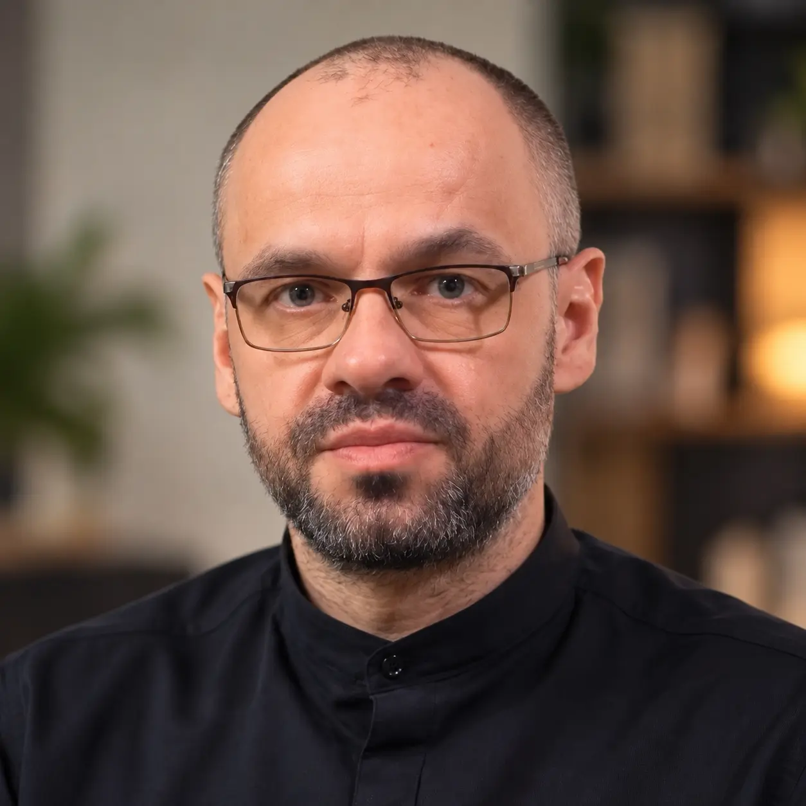

Zrobiłam to i pomogłam moim pacjentom odzyskać pełną ostrość umysłu oraz pokonać mgłę mózgową za pomocą naturalnej formuły. 👇
Obejrzyj wideo do końca z włączonym dźwiękiem — wyjaśniam, dlaczego zwykłe witaminy przestają działać po 50. roku życia i co zrobić w zamian, aby trwale chronić pamięć.
12 tys.
263 komentarze · 42 udostępnienia